Arduino projects, flight controller code, and RC electronics from various video tutorials.
Each project includes code examples and implementation details.
Cheapass quadcopter sketches
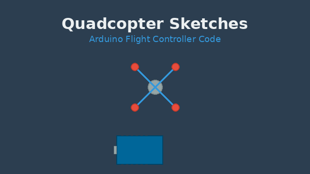
Cheapass quadcopter sketches
Example sketches and code used in the Cheap-ass quadcopter build videos.
TX tester thingy
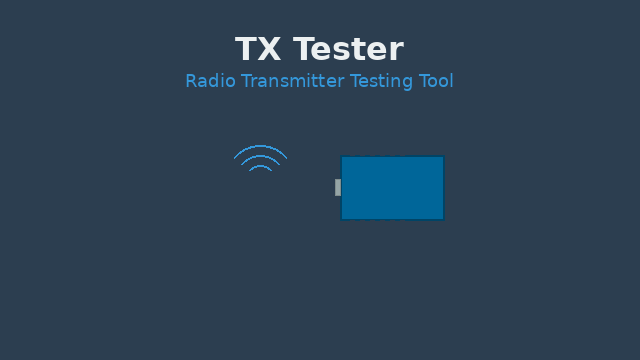
TX tester thingy
A transmitter tester utility used in various RC-related videos.
Mini oscilloscope
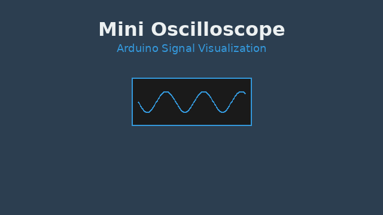
Mini oscilloscope
Arduino-based mini oscilloscope implementation.
MultiWii RF24 telemetry
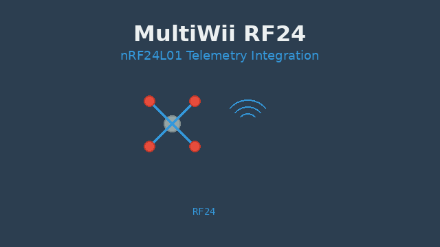
MultiWii_RF24.zip
MultiWii integration with nRF24L01 for telemetry.
Android telemetry app
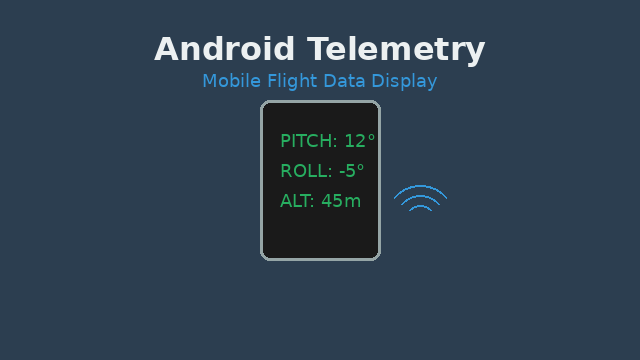
Android app that shows telemetry stuff
Android Studio project showing telemetry data from the RF24/MultiWii setup.
Transmitter sketch for Android telemetry app
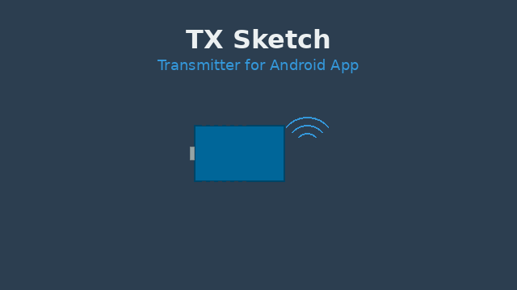
Sketch for transmitter to go with Android telemetry app
Arduino sketch for the transmitter that feeds telemetry to the Android app.
nRF24L01 comparison files
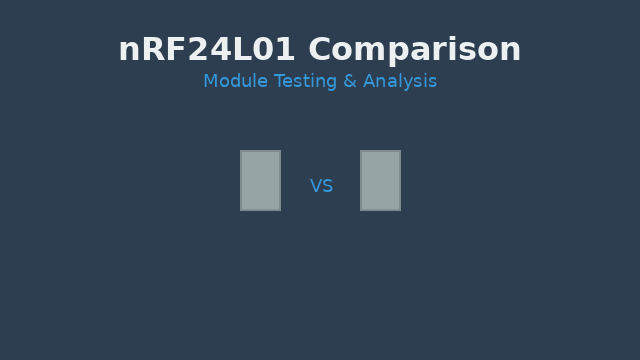
Files for the nRF24L01 comparison
Code and data used for comparing different nRF24L01 modules.
Basic car sketches
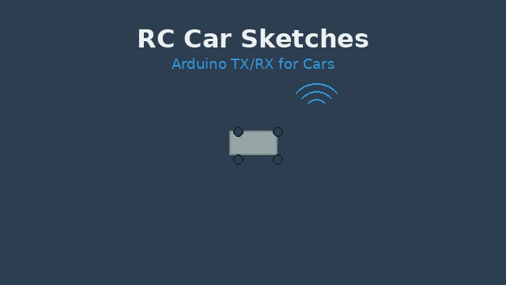
basicCarSketches.zip
Core Arduino sketches for RC car transmitter and receiver.
Follow-me Mk2 RC car
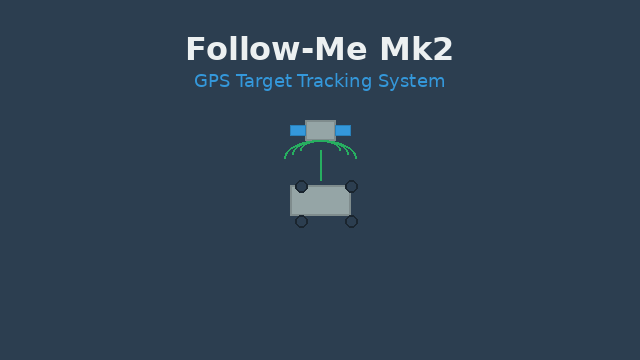
FollowMeMk2.zip
GPS-enabled RC car follow-me system (Mk2 version).
ILI9340 scope sketch
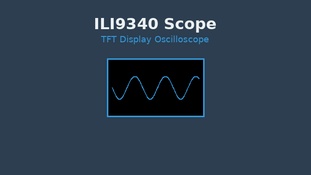
Scope_ILI9340.ino
Oscilloscope-style display using an ILI9340-based TFT.
DIY Arduino wireless gamepad
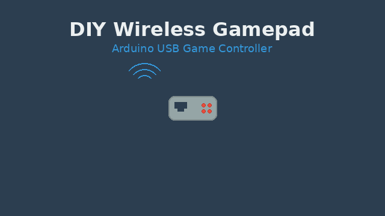
diyGamepadSketches.zip
Gamepad sketches using Arduino and UnoJoy-based USB interface.
UBX GPS (first version)
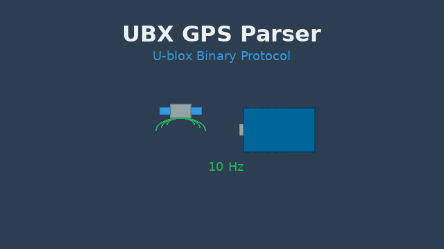
UBX_GPS.zip
Efficient parsing of U-blox GPS binary data at 10 Hz.
Cleanflight + nRF24L01 (Flip32)
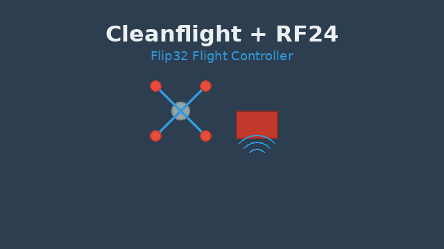
cleanflight_RF24_Flip32.zip
Integration of Cleanflight with nRF24L01 on a Flip32 flight controller.
Cheapass TX+RX with 8 channels
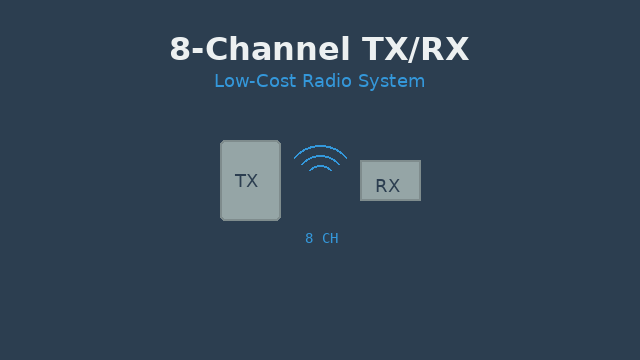
Cheapass TX+RX with 8-channels
DIY transmitter and receiver setup with 8 channels based on low-cost hardware.
YMFC-3D RF24 flight controller (draft)
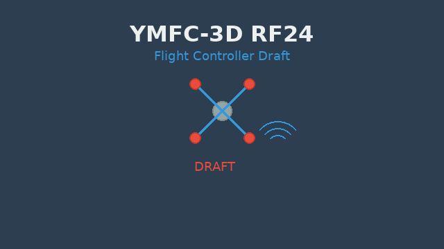
YMFC-3D_Flight_controller_RF24-draft.zip
Draft version of YMFC-3D-based quadcopter flight controller with nRF24L01 support.